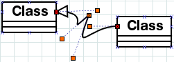
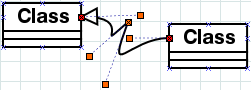
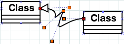
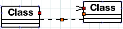
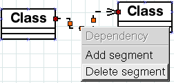
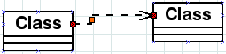

{kind=link}

 
 Contents
Lars Clausen < lars@raeder.dk > is the main maintainer, but anyone with an account the live.gnome.org Wiki can update it.
The newest version should always be available from the Dia home page at http://live.gnome.org/Dia.
This FAQ was put together by Lars Clausen < lars@raeder.dk >. Most of the material came out of the Dia mailing list. The following people contributed more advice: Kerry < needles@industrialmusic.com >, James Henstridge < james@daa.com.au >, Simon Josefsson < simon@josefsson.org >, Jacek Pliszka < Jacek.Pliszka@fuw.edu.pl >, Steffen Macke < sdteffen@yahoo.com >, Robert Campbell < rob.campbell@visto.com >, Alan Horkan, and Hubert Figuiere < hfiguiere@teaser.fr >.
Wikification was done mainly by branko, WolfgangStoeggl, SteffenMacke and LarsClausen. Further information on who has updated it since wikification can be found under the history tab.
For change information, click the 'history' tab.
The general consensus is to pronounce it "dee-a", not "die-a" (in IPA: ['diə]), following the pronunciation of the first part of the word "Diagram" in Swedish, the language of the original creator Alexander Larsson, and in the languages of most of the later maintainers. But if you pronounce it your way, we're not going to bring out the pitchforks and torches. We'll just be a little confused when we hear it.
Like The Gimp, Dia depends heavily on a menu on the right mouse button inside the diagram. That menu contains all the diagram-specific actions and a few other things, so you almost never have to find the menu on the toolbox. A snapshot shows an example of the menu.
You can change to having a "normal" menu bar in the Preferences dialog. Note that this will only affect diagrams opened after the preferences are changed.
The preferences dialog only affects diagrams that are created thereafter. To change grid lines etc., go to the View menu and select settings there. The settings will be saved with the diagram.
Unix (XFree86): If EmulateThirdButton is enabled (which it should be if you have a two-button mouse), you can make a middle-button click by pressing both buttons simultaneously (an action also known as chording). Windows: If you don't have a middle mouse button, hold down the Ctrl key and use the right mouse button.
This is possible since version 0.95, however it may not be the most user-friendly way. Find the file ".dia/menurc" in your home directory (that would be "C:\Documents and Settings\yourlogin\.dia\menurc" on Windows or "~/.dia/menurc" on *nix systems like Linux). Open the file with a text editor (e.g. gedit in Linux, or in Windows by using Start->Run and typing "notepad %USERPROFILE%/.dia/menurc" (without the quotes)).
Find a line that contains the accelerator (shortcut) you wish to change, e.g. if you want to change the "Delete" key for Edit/Delete, this would be the line:
; (gtk_accel_path "<Actions>/display-actions/EditDelete" "Delete")
Let's say you want to change it to Control+Delete, so change the line to:
(gtk_accel_path "<Actions>/display-actions/EditDelete" "<Control>Delete")
Notice that you have to delete the leading semicolon. The modifier keys (Ctrl, Alt, Shift) are written as <Control>, <Alt>, <Shift> and can be combined, e.g. "<Control><Shift>d" is a valid accelerator for Ctrl+Shift+d. Special keys such as Return, Insert, Delete are written as Return, Insert, Delete.
Save the file then. Note that Dia may not be running while you edit this file.
These functions correspond to the items in the Tools menu. Set or change their accelerator keys there.
They determine what happens when you drag-select objects. Normally, only the objects included in the drag area end up selected. By selecting other choices in the Select radio menu, you can change that behavior:
Union:
Intersect:
Remove:
Invert:
These operations correspond to set operations between the previously selected objects and the drag-selected objects.

The right mouse button (or the middle mouse button, if you have the main menu on the right button, Gimp style) gives an object-specific menu. For zig-zag lines, poly lines and bezier lines, that menu allows you to add and remove bends.
As of version 0.93, zig-zag lines support a primitive form of autorouting that is intended to solve this problem and make it easier to make the diagrams look good. The autorouting algorithm does not attempt to avoid objects, but should at least make the lines go the right direction out from connection points. If it doesn't appear to work, double-click the zig-zag line and check that autorouting is on for it. This setting can also be accessed from the object menu.
For previous versions, here is a workaround for how to make zigzags change direction:
Using the object-specific menu on the middle mouse button, create an extra segment at each end of the line, then delete the middle segment:





There isn't a good way to do this yet, as of version 0.96. There is a bad way: You can select all the objects you want to change, group them, then edit properties of the group. This will work, but has two drawbacks: 1) You will set *all* settable properties to the same value, so if you want to change the line width, but have different color objects, they will end up with the same color. 2) Any connections out of the group will be disconnected from their objects. There is currently work being done on fixing booth of these problems, but there is no deadline for it.
The size of classes is decided by their contents, especially the text. Note that you can scale the entire diagram when you print, see the question about page fitting.
We've been thinking about how to allow more connection points. Point is, there are several different ways it could be done that all make sense, and we'd like to get the most usable of them, while maintaining backwards compatibility. Note that the standard Line object allows you to add more connection points to it by the middle mouse menu. You can in a pinch place a line along the edge of an object and use the lines connection points:)
While the GDK rendering engine provides support for rotated text, having rotated text is only part of the problem. We also need infrastructure so that handles, connection points, bounding boxes etc. are rotated along with the object. Help on this would be appreciated.
You can, for some objects. Adding connection points in general is a tricky problem, as it is difficult to make sure that the points keep their placement after a reload. The standard line object allows adding more points via the object menu.
Font support is not very standard in X, especially when you want to make images, print, and send the files to other people. In Dia version 0.90 and earlier, you can improve things by installing the urw-aliases package (or the GhostScript fonts). After installing the package, you will need to do a simple edit of a config file. Edit /etc/X11/fs/config and move the line /usr/share/fonts/default/urw-aliases to just below the ...:unscaled lines (make sure the commas are in the correct places after making the change). Then run killall -USR1 xfs to get the font server to reread its config file. The URW fonts should be used in place of the adobe ones they are clones of when an unscaled bitmap version can't be found.
As of 0.91, Dia on Unix uses the FreeType library to provide better font support. The fonts for this are in turn controlled by font-config. Note that this means that remote fonts servers cannot be used.
As of 0.96, fonts should keep their width correctly when zoomed in and out. However, due to differences in font rendering engines and in fonts available, the width may not be the same when moving files between computers, and particularly when moving between Windows and Unix.
This should only be an issue for versions 0.92 to 0.94. If you are using any of these versions, you should upgrade.
Dia 0.91 assumed things about Pango that weren't guaranteed, but didn't make a difference at the time. However, Pango 1.2.4 and up changed so that Dia's wrong assumptions now cause problems. This is fixed in Dia 0.92.1. Alternatively, if you can't install 0.92.1, you can downgrade your Pango to below 1.2.4. We highly recommend using the newest version of Dia, though. In Dia 0.92-0.94, we used a reworked cache which still didn't quite keep different sizes of the same text apart, so text would change size between huge, tiny and normal. In 0.95, the cache is disabled.
The recommended way to change the language in Dia is to change the Operating System language and Dia will follow the default. However many people have asked if they can use Dia in a language other than the current set default language. If the language you want is English the easiest approach is to move or remove the language files (.mo) and allow the default English to show through instead. (There also exists a slightly more complicated approach whereby you set the locale variable on the command line.)
Check the layers dialog. The active layer didn't get saved with the file. None of the objects you are trying to select are on the default layer.
Double click on the object in the toolbox to open a dialog that allows you to specify a default font size for the object.
The native Dia file format (extension .dia) is XML compressed with GZip. You can select not to compress the files in the Preferences or in the save dialog.
In the Page Setup dialog (selected from File/Page Setup), select Fit to:, and the blue lines will continuously self-adjust to fit to a page (or several pages).
First add \usepackage{pstricks} to the preamble of your TeX document. Then include your image as
\begin{figure}
\centering
\input{filename.tex}
\caption{A caption}
\label{figure:alabel}
\end{figure}in your document.
Note: PSTricks in the tetex-1.0.6-11 RPM (used in Red Hat Linux 6.2) is buggy. Easiest fix is to get pstricks.tex from CTAN and put it in /usr/share/texmf/tex/generic/pstricks/.
Draw them as standard lines in dia. Then in the .tex file replace \psline by \pccoil or \pczigzag. For more information on their arguments look into your PSTricks documentation included in your PSTricks package or at PSTricks home page. Careful! Lines with more then one segment have to be split into separate segments when pccoil and pczigzag are used.
Put them as you would put them in TeX, e.g.: $\delta^{\dagger}_2$. At the moment of writing this FAQ it is not yet displayed correctly in dia but TeX code produced should be fine. The bounding-box of the formula will not be calculated correctly. We're hoping for some kind, LaTeX-loving soul to implement the interface to TeX that will allow us to get a bitmap rendering of the TeXified output. It probably would require some way to set TeX invocation string, preamble and postamble.
Dia has several ways to print: Dia print, Gnome print and Export as !Postscript. A given compilation of Dia uses either Dia print or Gnome print. Dia's support for Gnome print is currently buggy and disabled by default, but some distributions (Red Hat for one) compile it in anyway. If you have such a version of Dia installed, you can Export as !Postscript instead of printing, and then print the resulting file.
Version 0.94 of Dia should be able to convert files without running X. However, a working installation of GTK is required to link the program, and Pango must be available for text conversion.
Earlier versions of Dia depend on X for various things, but it is planned to allow conversions without running X. In the meanwhile, you can use Xvbf to simulate an X server with the command:
startx "/usr/bin/env DISPLAY=:1 /usr/bin/dia -e $HOME/tmp/foo.png $HOME/tmp/foo.dia" -- /usr/!X11R6/bin/Xvfb :1 -once -nolisten tcp
Thanks to Basile Starynkevitch for this hint.
The current PostScript output on systems with font-config involves rendering the fonts as bezier curves. This gives an (almost) perfect output, but doesn't allow PostScript tools to operate on the fonts. If you want to get output using PostScript fonts, use the EPS export filter marked as "using PostScript Latin-1 fonts". To use this from the command line for conversions, add --export-to-format=eps-builtin to the command line.
Note that this export doesn't support other encodings than Latin-1 and is limited to the "standard 13" set of fonts. Please don't ask us to add other encodings to this. We will not do it. It's an interim solution while we try to get embedded fonts out of Pango (maybe using PangoPDF) or find a proper way to include partial fonts.
Buy a postscript printer or implement GDI printing ...  The other option is to install Ghostscript along with its print redirector so you can have a Windows printer that filters things through gs.
The other option is to install Ghostscript along with its print redirector so you can have a Windows printer that filters things through gs.
In most cases, it is because you have an old version of a support library. The libraries needed to compile Dia version 0.91+ are:
pkg-config version 0.14.0 or higher.
GTK version 2.0.0+
and related libraries (glib, atk, pkg-config, pango). Pango version 1.1.5 or higher. Must be compiled with the PangoFT2 module. Pango 1.1.5 and higher depend on GLib version 2.1.3 or higher. PangoFT2 depends on font-config version 1.0.1 or higher.
libxml version 2.3.9 or higher
intltool version 0.21 or higher.
freetype version 2.0.9 or higher on Unix.
Optional libraries that add extra features (for 0.91+):
libpng (for png export support)
gnome-libs (for Gnome support)
libart version 2.1.0 or higher, for antialiasing and PNG export support.
libxslt for the XSLT plug-in.
The libraries needed to compile Dia as of version 0.90 are:
Glib version 1.2.0+ (required by GTK)
GTK version 1.2.0+
Gdk-Pixbuf version 0.7.0+ (can be replaced with Imlib version 1.8.0+)
libxml version 1.8.5+
intltool version 0.12 or higher.
version 0.4 (not the version 0.7 available at SourceForge). Optional libraries that add extra features (for 0.90):
libpng (for png export support)
gnome-libs (for Gnome support)
bonobo (for document embedding support, requires Gnome)
freetype version 2.0.9 or higher, for better font support.
libart version 2.1.0 or higher, for antialiasing and PNG export support.
Note that if you use some package system (dpkg or RPM), you will need to download the development packages (-dev or -devel).
Some systems, notably Red Hat and derivatives, don't have /usr/local/lib in /etc/ld.so.conf. GNU applications by default install into /usr/local when compiled. To make Dia work there, either add /usr/local/lib to /etc/ld.so.conf and run ldconfig as root, or configure with --prefix=/usr to put everything in /usr.
This section needs updating
As of version 0.95, Dia does not attempt to update its own .spec file, simply because there are too many differences between distributions. Instead, there is a subdirectory WHERE that contains various .spec files. Thus, the line below needs to have a .spec file specified.
rpmbuild -ta dia-XXX.tar.gz
Yes, on Mac OS X 10.4.2, using fink versions of libtool 1.5.10, autoconf 2.59, and automake 1.9.4, Daniel Rogers has managed to compile Dia 0.94 under Mac. See this mail. It has not been reported to compile with any non-X port of Gtk2.
Because the HOME environment variable is not set. Add a line like this to your autoexec.bat file:
set HOME=c:\home
then restart your computer and make sure c:\home exists. The path should not contain any spaces and is case-sensitive (c:\Home is not the same as c:\home).
As of Dia 0.88.1, this problem should no longer happen.
Cyrille Chepelov answered this question in depth after yet another impractical patch had arrived on the list. To avoid headaches for everybody, please follow these words of wisdom:
The best way to generate these is to download the tree through anonymous CVS (from cvs.gnome.org, this is possible of course also for Windows with the "Universal Geek user interface device driver" (cygwin)).
Then, all what is necessary is to do cvs adds (commit will of course not be accepted), do a cvs -z3 up -PAd to check that the patch will be as up to date as possible, and issue the following command: cvs -z3 diff -Nu 2>/tmp/diff.log | gzip >/tmp/some.patch.gz
Study diff.log to check that no files have been unnecessarily touched. zless the patch to check that all changes are accounted for in ChangeLog and are justified (one patch per orthogonal set of changes is also preferred).
An alternative is to have two copies, one pristine and one work area, of the same tree, preferably a recent CVS snapshot. Modify all files and test in the work area; then make distclean in both trees, and in the directory which contains both trees, do something like :
diff -urN dia-pristine dia-workarea >/tmp/some.patch grep "^+++" /tmp/some.patch # check that no files have been unnecessarily # touched, added or removed. less /tmp/some.patch # check that patch is correct gzip /tmp/some.patch
Again, this is possible even on a (okay, recent) Macintosh.
Send the patch as an attachment. Don't resend the same version of the patch twice on the list (when replying to yourself with updates...). Keep large patches (> 5-40 kb) for private mails and/or in Bugzilla (URL in the mailing list is of course welcome; small patches are okay, especially if some discussion on them is sought).
"Couldn't find standard objects when looking for object-libs, exiting..."
You're trying to run the Dia executable directly from the source directories. Either do make install, or run with the wrapper script app/run_dia.sh. That way, Dia will know where to find its objects.
An explanation is given in [http://www.gnome.org/projects/dia/custom-shapes doc/custom-shapes] in the source distribution on how the shape format works.
Sam Liddicott has provided a Dia/SvgToShapeXslt that will make a shape from any SVG file, including connection points. With this, it should be easy to create shapes with, say, Inkscape.
However, Dia now also has the capability of exporting a diagram as a shape. Each collection of shapes (called a sheet) should be kept together in a subdirectory of ~/.dia/shapes, e.g, ~/.dia/shapes/Engines. To make a shape, first design it in Dia. Then export it into your subdirectory. Two files will be generated, a .shape file and a .png file (the icon).
From version 0.90 and up, Dia features a Sheets and Objects editor which will allow you to load the shape into a sheet. It will also update Dia's loaded objects on the fly.
If you still want to do things by hand, update the corresponding sheet file in ~/.dia/sheets, in this case called Engines.sheet. Example contents of a sheet file is:
<?xml version="1.0" encoding="iso-8859-1"?> <!-- -*- xml -*- -->
<sheet xmlns="http://www.lysator.liu.se/~alla/dia/dia-sheet-ns">
<name>Engines</name>
<description>Mechanical Engines</description>
<contents>
<object name="Engines - Gas">
<description>A gas engine</description>
</object>
</contents>
</sheet>Each new object should be added to the sheet by adding an object section. Next time you restart Dia, the new objects should show up in the list of sheets.
If you want your sheets and shapes included in Dia, please create a .sheet.in file where the name and description tags are replaced by _name resp. _description. This allows us to have an external translation of the sheets. The sed script below outputs a .sheet.in file from a .sheet file:
sed 's!<name>!<_name>!;s!</name>!</_name>!;s!<description>!<_description>!;s!</description>!</_description>!;'
No, it can't. Visio file format is a completely proprietary and undocumented file format. So it is really difficult to write code to read it. The now-defunct Software Bazaar offered a bounty of several thousand dollars for reverse-engineering the Visio format. We really would like to be able to do so.
An easier alternative would be to make a Visio plug-in that will allow conversion. Other programs have already done this for their proprietary formats. If somebody were to make such a script, we could set up a public server to do conversions.
With Visio 2002, it has become possible to export Visio diagrams as XML (.vdx). Microsoft, in their infinite generosity, has even published the Schema. Ian Redfern has made use of this, and a VDX importer/exporter is part of Dia as of version 0.96.
Ian Redfern is working on decoding the Visio format. If you have any interest in converting Visio files, please give him your assistance. Valek Filippov made a little research of the VSD/VSS file format. At some point Ian is going to hook the results to a VDX importer. Right now vsdump can be useful for dumping images embedded into VSS stencils to subsequent converting them into Dia sheets.
Dia is released under the GPL, version 2. The full text and more information about the GPL can be found on the GPL website.
As explained on the GPL website, the developers of Dia have no claim to any diagrams you create using Dia. Therefore, you are free to license any diagrams you create with Dia however you wish.
If you are looking for an open license with which to license your diagrams, you might want to consider the Creative Commons.
Dia/Faq (last edited 2009-04-13 13:40:09 by NickMoore)